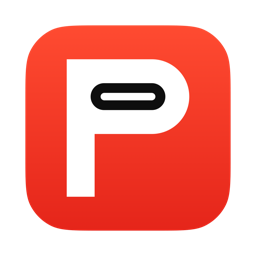
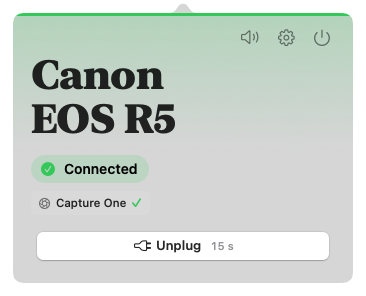
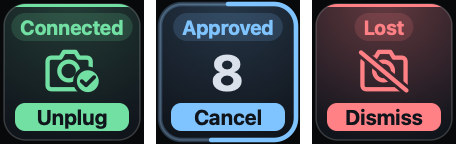

When the camera drops
Red glow and a repeating sound until you reconnect or dismiss.

PortPanicA red glow and a repeating sound when your camera disconnects from Capture One.
Free. Version 3.2.0 Beta 3.Free. Version 3.2.0 Beta 3.
Pull the plug to try the alert.
Illustrated preview. Sound is off.
Capture One 16.x required
macOS 14 or later. Apple silicon and Intel.
Red glow and a repeating sound until you reconnect or dismiss.
A short green glow and sound confirm the tether is back.

Swapping a battery? Choose Unplug before pulling the cable. The drop stays quiet.

Optional Stream Deck keyChoose sounds, colors and displays. Test either alert from Settings.
Free. Version 3.2.0 Beta 3.
Public beta for testing. Real-camera, extended-shooting, fresh-install and macOS 14/Intel checks are in progress. Test your setup before a shoot.
Need help? Read the guide or report a problem.
No. PortPanic reads Capture One's tethered-camera list. USB events can detect a cable drop sooner. Capture One 16.x is required.
The alert leaves keyboard focus in the app you are using. Clicks pass through the glow. Only Dismiss takes a click.
If Capture One stops answering, PortPanic shows the last known status. That warning alone does not trigger a camera loss alert. Quitting Capture One or closing your session or catalog leaves PortPanic quiet.
Only updates and release notes. Camera monitoring and logs stay on your Mac. No account or analytics.